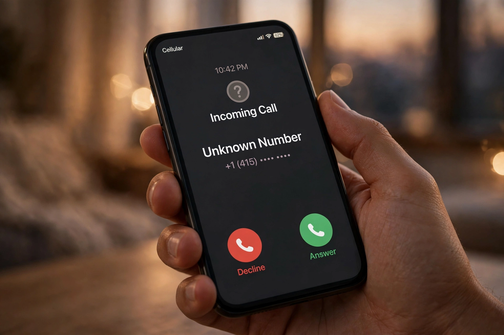

Numer kierunkowy 22 to Warszawa. Jeśli dzwonił do Ciebie nieznany numer zaczynający się od 22, może to być firma z Warszawy, call center, bank, kurier — albo oszust podszywający się pod warszawski numer. Sam kierunkowy niewiele mówi o tym, kto dzwonił: dziś każdy może wyświetlić dowolny numer. Ten poradnik wyjaśnia, jak szybko sprawdzić nieznany numer telefonu i zdecydować, czy warto oddzwaniać.
Kierunkowy 22 jest przypisany do Warszawy i okolic — to jeden z najstarszych numerów kierunkowych w Polsce. Numery stacjonarne z 22 należą zwykle do firm, urzędów i instytucji z siedzibą w stolicy. W praktyce jednak coraz więcej połączeń "z 22" pochodzi z centrów telefonicznych, które wcale nie mają siedziby w Warszawie: numery stacjonarne można dziś wynająć i wyświetlać z dowolnego miejsca, także z zagranicy. Dlatego sam kierunkowy nie jest dowodem, że dzwonił ktoś z Warszawy. Zanim oddzwonisz, sprawdź cały numer — wpisz go w wyszukiwarce numerów i zobacz, co mówią o nim inni użytkownicy. Jeśli numer był już zgłaszany jako spam, dowiesz się o tym w kilka sekund: sprawdź co to za numer i przeczytaj opinie osób, które odebrały połączenie.

Uważaj zwłaszcza wtedy, gdy rozmówca podaje się za pracownika banku, policji, urzędu skarbowego albo firmy kurierskiej i prosi o dane, kody z SMS-a lub przelew "weryfikacyjny". Żadna z tych instytucji nie dzwoni w ten sposób — to klasyczny schemat oszustwa. Niebezpieczne są też połączenia, które urywają się po jednym sygnale: to tak zwane "wangiri" — oszust liczy na to, że oddzwonisz na płatny numer premium. Nie oddzwaniaj na nieodebrane połączenie z nieznanego numeru, jeśli nie spodziewasz się telefonu. Zamiast tego sprawdź numer w bazie zgłoszeń i dopiero wtedy zdecyduj. Jeśli rozmowa już się odbyła i coś Cię zaniepokoiło, zgłoś numer — Twoje zgłoszenie pomoże innym.
Jeśli numer okazał się bezpieczny — na przykład to kurier, przychodnia albo firma, z którą masz umowę — możesz oddzwonić bez obaw. Jeśli opinie wskazują na spam lub oszustwo, zablokuj numer w telefonie i nie odbieraj kolejnych połączeń. W telefonach z Androidem i iPhone'ach blokada zajmuje kilkanaście sekund i działa od razu. Warto też zgłosić numer operatorowi lub do bazy zgłoszeń użytkowników: im więcej zgłoszeń, tym szybciej inni dowiedzą się, że numer jest niebezpieczny. Pamiętaj: prawdziwy bank czy urząd nigdy nie poprosi Cię o hasło, kod BLIK ani dane karty przez telefon.
Nie wiesz, kto dzwonił? Na ktodzwonil24.pl sprawdzisz nieznany numer telefonu za darmo i zobaczysz opinie innych użytkowników.